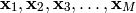
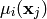
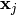
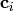

Fuzzy C-Means is a clustering and classification technique based on traditional clustering algorithms, but using concepts of fuzzy logic. The algorithm has a learning procedure and can be used in any situation where a clustering algorithm could be used. The development of the fuzzy C-means algorithm is not difficult, and, although very interesting, is beyond the scope of this tutorial. We strongly suggest consulting the literature on the subject.
To run the algorithm, we must supply a list of N-dimensional vectors to be clustered, and the initial conditions of the clustering in the form of membership values of each vector in each class. Suppose that we want to cluster a set of M vectors given by

in C classes. Here, the bold face font represents a N-dimensional vector. We associate to each vector and each class a membership value, given by

which represents the membership of the vector  in the class i. The clustering consists in dividing the N-dimensional space in C regions, represented by its centers given by . The fuzzy C-means algorithm calculates those centers. Notice that the sum of the memberships for any given vector must be exactly 1.
In this tutorial, we will use the fuzzy C-means to split two-dimensional vectors in two classes. To the values given below, we can intuitively find the centers of the two clusters at (1, 1) and (6, 6) and we would be correct. It is a good idea to try first to solve problems to which we already know the solution – that way we can check if what we are doing is correct or not.
We start by importing the needed libraries, as always:
from numpy import *
import peach as p
We create the vector list and the corresponding membership values for each vector. There are 18 two-dimensional examples, and 18 pairs of membership values. This means that each example will be classified in two classes, with the corresponding membership values. This means that the vector [ 0, 0 ] will be classified with membership values 0.7 in the first class and membership values 0.3 in the second class and so on:
x = array( [
[ 0., 0. ], [ 0., 1. ], [ 0., 2. ], [ 1., 0. ], [ 1., 1. ], [ 1., 2. ],
[ 2., 0. ], [ 2., 1. ], [ 2., 2. ], [ 5., 5. ], [ 5., 6. ], [ 5., 7. ],
[ 6., 5. ], [ 6., 6. ], [ 6., 7. ], [ 7., 5. ], [ 7., 6. ], [ 7., 7. ] ] )
mu = array( [
[ 0.7, 0.3 ], [ 0.7, 0.3 ], [ 0.7, 0.3 ], [ 0.7, 0.3 ], [ 0.7, 0.3 ],
[ 0.7, 0.3 ], [ 0.7, 0.3 ], [ 0.7, 0.3 ], [ 0.7, 0.3 ], [ 0.3, 0.7 ],
[ 0.3, 0.7 ], [ 0.3, 0.7 ], [ 0.3, 0.7 ], [ 0.3, 0.7 ], [ 0.3, 0.7 ],
[ 0.3, 0.7 ], [ 0.3, 0.7 ], [ 0.3, 0.7 ] ] )
Notice that the starting values for the memberships could be randomly choosen, at least for simple cases like this. You could try the lines below to initialize the membership array:
from numpy.random import random
mu = random((18, 1))
mu = hstack((mu, 1.-mu))
This parameter measures the smoothness of convergence. Please, consult the literature on the subject. Basically, m is a value bigger than 1, and the closer it is to unity, the more drastic is the separation:
m = 1.25
We instantiate the FuzzyCMeans class to generate the algorithm. We must pass, in this order, the vector set, the corresponding membership values, and the parameter m. This parameter is optional, though, and if not given, will default to 2:
fcm = p.FuzzyCMeans(x, mu, m)
The FuzzyCMeans object has a series of attributes, properties and methods that can be useful. Please, check the reference for more information. Some of these information is listed below:
- c
- A numpy array containing the centers of the classes in the algorithm. Each line represents a center, and the number of lines is the number of classes. This property is read and write, but care must be taken when setting new centers: if the dimensions are not exactly the same as given in the instantiation of the class (ie, C centers of dimension N, an exception will be raised.
- mu
- The membership values for every vector in the training set. This property is modified at each step of the execution of the algorithm. This property is not writable.
- x
- The vectors in which the algorithm bases its convergence. This property is not writable.
- centers()
- Given the present state of the algorithm, recalculates the centers, that is, the position of the vectors representing each of the classes. Notice that this method modifies the state of the algorithm if any change was made to any parameter. This method receives no arguments and will seldom be used externally. It can be useful if you want to step over the algorithm. This method has a colateral effect! If you use it, the c property (see above) will be modified.
- membership()
- Given the present state of the algorithm, recalculates the membership of each example on each class. That is, it modifies the initial conditions to represent an evolved state of the algorithm. Notice that this method modifies the state of the algorithm if any change was made to any parameter. It can be useful if you want to step over the algorithm. This method has a colateral effect! If you use it, the mu property (see above) will be modified..
- step()
- This method runs one step of the algorithm. It might be useful to track the changes in the parameters. It automatically calls the centers() and membership() methods (see above) when needed. It returns the norm of the change in the membership values in the examples, which can be useful to track the convergence of the algorithm.
- __call__(emax=1.e-10, imax=20)
- The __call__ interface is used to run the algorithm until convergence is found. It returns the centers of the clustered regions.
As seen above, all we need to do now is to call the instantiated object to obtain the results. We can also inspect the final membership for every vector in the example set:
print "After 20 iterations, the algorithm converged to the centers:"
print fcm(emax=0)
print
print "The membership values for the examples are given below:"
print fcm.mu
print
The output of the algorithm is given below:
After 20 iterations, the algorithm converged to the centers:
[[ 0.99999846 0.99999846]
[ 6.00000154 6.00000154]]
The membership values for the examples are given below:
[[ 9.99999405e-01 5.95365284e-07]
[ 9.99999928e-01 7.22228005e-08]
[ 9.99997812e-01 2.18828877e-06]
[ 9.99999928e-01 7.22228005e-08]
[ 1.00000000e+00 7.98237469e-53]
[ 9.99999646e-01 3.53890242e-07]
[ 9.99997812e-01 2.18828877e-06]
[ 9.99999646e-01 3.53890242e-07]
[ 9.99984741e-01 1.52586970e-05]
[ 1.52586970e-05 9.99984741e-01]
[ 3.53890242e-07 9.99999646e-01]
[ 2.18828877e-06 9.99997812e-01]
[ 3.53890242e-07 9.99999646e-01]
[ 7.98237469e-53 1.00000000e+00]
[ 7.22228005e-08 9.99999928e-01]
[ 2.18828877e-06 9.99997812e-01]
[ 7.22228005e-08 9.99999928e-01]
[ 5.95365284e-07 9.99999405e-01]]